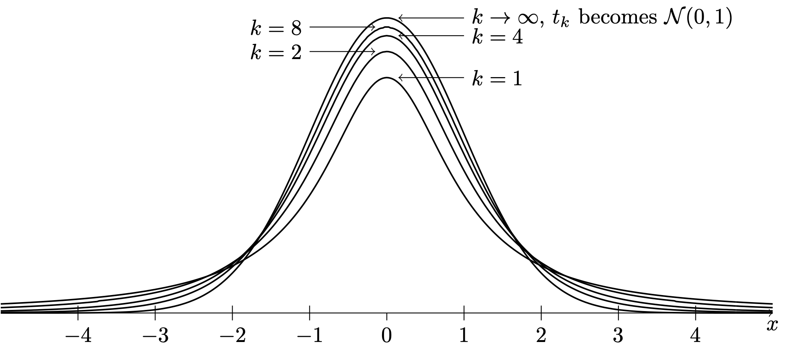
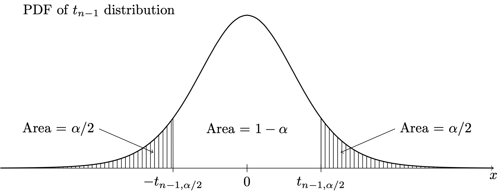

Code
gr <- c(1.66, 1.61, 1.62, 1.69, 1.58, 1.43, 1.66,
1.69, 1.58, 1.20, 1.52, 1.60, 1.55, 1.67,
1.77, 1.50, 1.64, 1.54, 1.40, 1.36, 1.50,
1.40, 1.35, 1.48, 1.64, 1.91, 1.70)
Xbar <- mean(gr)
Sn <- sd(gr)$$
$$
In Chapter 24 we considered how to construct a confidence interval for \(\mu\) based on a random sample \(X_1,\dots,X_n\) drawn from the \(\mathcal{N}(\mu,\sigma^2)\) distribution where \(\mu\) was unknown but the variance \(\sigma^2\) was known. In practice, one cannot assume knowledge of the value of \(\sigma^2\), so one has to estimate its value using the sample variance \(S_n^2\). Recall our \((1-\alpha)\times 100\%\) confidence interval for \(\mu\) which depended on knowledge of \(\sigma^2\) was given by \[ \bar X_n \pm z_{\alpha/2}\frac{\sigma}{\sqrt{n}}. \] Now, one may be tempted to simply replace \(\sigma\) in the above expression with the sample standard deviation \(S_n\). We find however, that this will cause the confidence interval to perform poorly (not cover its target \(\mu\) with the desired probability) when the sample size is small. If the sample size is large, we will find that we indeed can simply substitute \(S_n\) for \(\sigma\), but let us consider first the case of a small sample.
When the sample size \(n\) is small, we can expect our estimate \(S_n\) of \(\sigma\) to be somewhat poor, in the sense that, from sample to sample, it will have a large amount of variability. As a consequence of the limited accuracy with which we can estimate \(\sigma\) with \(S_n\), we find that we must make the interval a bit wider if we wish to ensure that it will contain \(\mu\) with the advertized probability \(1-\alpha\). The precise way in which we should widen the interval to penalized ourselves for having had to estimate \(\sigma\) was discovered by William Sealy Gosset, who published his results under the pseudonym Student. Starting from the fact that \[ Z = \frac{\bar X_n -\mu}{\sigma /\sqrt{n}} \sim \mathcal{N}(0,1) \] provided the random sample is drawn from the \(\mathcal{N}(\mu,\sigma^2)\) distribution, Student began to investigate the distribution of \[ T = \frac{\bar X_n - \mu}{S_n /\sqrt{n}}, \] which is the difference between the sample and population mean as a number of estimated standard deviations. The quantity \(T\) is sometimes called the Studentized sample mean.
Student’s investigations led him to the discovery of a set of probability distributions called the \(t\) distributions. These distributions, like the chi-squared distributions, are indexed by a parameter called the degrees of freedom parameter. The reason for this is that a random variable having one of Student’s \(t\) distributions can be constructed as \[ T = \frac{Z}{\sqrt{W / k}}, \] where \(Z\) and \(W\) are indepedent random variables such that \(Z\sim \mathcal{N}(0,1)\) and \(W \sim \chi^2_k\). The random variable \(T\) constructed in this way will have the \(t\) distribution with degrees of freedom \(k\). We next give the probability density function (PDF) of the \(t\) distributions.
Definition 26.1 (The \(t\) distributions) For each \(k>0\), the probability distribution with PDF given by \[ f(x;k) = \frac{\Gamma((k+1)/2)}{\sqrt{k\pi}\Gamma(k/2)}\Big(1 + \frac{x^2}{k}\Big)^{-(k+1)/2} \] is called the \(t\) distribution with degrees of freedom \(k\), where \(\Gamma(a)=\int_0^\infty u^{a-1}e^{-u}du\) for \(a>0\) is the gamma function.
We will write \(T \sim t_k\) to express that \(T\) is a random variable having the \(t\) distribution with degrees of freedom \(k\).
We will not need to use the formula for the PDF other than for making plots of it. We find that as the degrees of freedom parameter \(k\) increases, the PDF of the \(t_k\) distribution approaches that of the \(\mathcal{N}(0,1)\) distribution. This is illustrated below:

Note that the \(t\) distributions are symmetric around zero and “bell shaped”, just like the standard normal distribution; however, the \(t\) distributions have “heavier tails” than the standard normal distribution. This means that a random variable having a \(t\) distribution is more likely to take values a greater distance from zero. For small values of the degrees of freedom parameter, the \(t\) distributions gives considerable weight to values lying quite far from zero–even extremely far from zero if \(k=1\) or \(k=2\).
We now state the main result found by Student, which will enable use to construct a confidence interval for \(\mu\) based on \(\bar X_n\) and the sample standard deviation \(S_n\) (in place of the unknown population standard deviation \(\sigma\)).
Proposition 26.1 (Distribution of Studentized sample mean) If \(X_1,\dots,X_n \overset{\text{ind}}{\sim}\mathcal{N}(\mu,\sigma^2)\), then \[ T = \frac{\bar X_n - \mu}{S_n /\sqrt{n}} \sim t_{n-1}. \]
The transformation of \(\bar X_n\) by the subtraction of \(\mu\) and division by \(S_n/\sqrt{n}\) can be referred to as “sending \(\bar X_n\) into the \(T\) world,”, where this is in contrast to sending \(\bar X_n\) into the \(Z\) world, which requires knowledge of \(\sigma\). In order to make use of the above result in constructing confidence intervals, it will be convenient to define notation for upper quantiles of the \(t_{n-1}\) distribution, similarly to how we have defined upper quantiles for the \(\mathcal{N}(0,1)\) distribution. For any \(\alpha \in (0,1)\), let \(t_{n-1,\alpha/2}\) denote the value such that \(P(T > t_{n-1,\alpha/2}) = \alpha/2\), as depicted below:

Certain upper quantiles for several \(t\) distributions can be looked up in the \(t\) table in Chapter 42.
Equipped with this notation for the upper \(\alpha/2\) quantile, we can derive a \((1-\alpha)\times 100\%\) confidence interval for \(\mu\) based on \(\bar X_n\) and \(S_n\) as follows:
From here we obtain:
Proposition 26.2 (Confidence interval for normal mean when variance is unknown) If \(X_1,\dots,X_n \overset{\text{ind}}{\sim}\mathcal{N}(\mu,\sigma^2)\), then for any \(\alpha \in (0,1)\) the interval with endpoints given by \[ \bar X_n \pm t_{n-1,\alpha/2}\frac{S_n}{\sqrt{n}} \] will contain the value of \(\mu\) with probability \(1-\alpha\).
Due to the heavy-tailedness of the \(t\) distributions, as depicted in Figure 26.1, we find that for all sample sizes \(n\), we have \(t_{n-1,\alpha/2} > z_{\alpha/2}\), so that the margin of error \(t_{n-1,\alpha/2}S_n/\sqrt{n}\) will always be greater than \(z_{\alpha/2}S_n / \sqrt{n}\). The extra width this gives to the confidence interval is the appropriate penalty for our having to estimate \(\sigma\) when we do not know its true value.
Exercise 26.1 (Confidence interval for the mean in golden ratio study) Refer to the golden ratio data in Example 15.2. From Figure 19.3, we have determined that is likely safe to assume that the sample was drawn from a normal population.
gr <- c(1.66, 1.61, 1.62, 1.69, 1.58, 1.43, 1.66,
1.69, 1.58, 1.20, 1.52, 1.60, 1.55, 1.67,
1.77, 1.50, 1.64, 1.54, 1.40, 1.36, 1.50,
1.40, 1.35, 1.48, 1.64, 1.91, 1.70)
Xbar <- mean(gr)
Sn <- sd(gr)Using \(\bar X_n = 1.565\) and \(S_n = 0.148\) construct confidence intervals for \(\mu\) at these confidence levels:
With \(\alpha = 0.05\) and \(n = 27\) we have \(t_{n-1,\alpha/2} = t_{27-1,0.05/2} = 2.0555\). So we obtain \[ 1.565 \pm 2.0555 \frac{0.148}{\sqrt{27}} = [1.506,1.623]. \]↩︎
With \(\alpha = 0.01\) and \(n = 27\) we have \(t_{n-1,\alpha/2} = t_{27-1,0.01/2} = 2.7787\). So we obtain \[ 1.565 \pm 2.7787 \frac{0.148}{\sqrt{27}} = [1.486,1.644]. \]↩︎